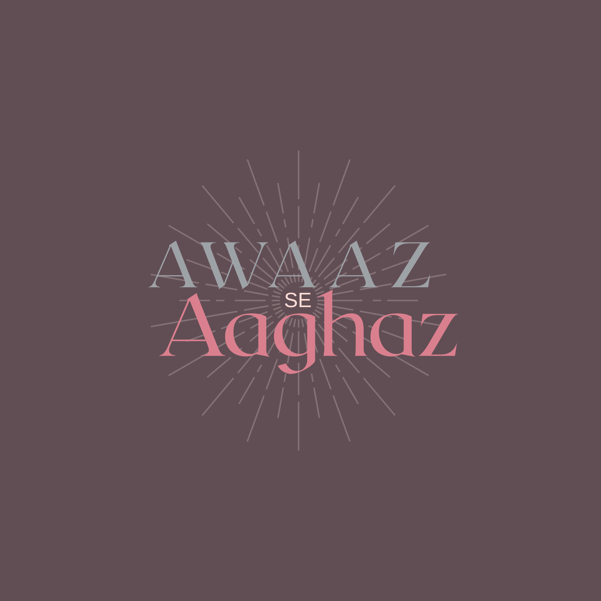

A student-founded public initiative dedicated to human welfare, community empowerment, and civic action — built on the belief that young people have the capacity to create real change in their city.

"Every movement begins with a voice. This is ours."
— Awaaz Se Aaghaz, Est. 2026
8
Active Pillars
2026
Year Founded
PK
Founded in Pakistan
∞
Open to All
Who We Are
Awaaz Se Aaghaz was founded in 2026 by a Grade 10 student in Karachi, Pakistan, who got tired of just talking about problems. ASA operates independently of any school or institution — chapters can be opened anywhere, each running under ASA's founding framework and values.
Every person's story deserves to be heard. ASA amplifies voices that go unheard.
Every action, however small, is the beginning of something larger.
This is solidarity, not charity. Every interaction reflects that.
Built to grow, improve, and outlast its founder — a movement, not a moment.
The Reality
These are the facts that made ASA necessary. Not distant statistics — the reality facing millions of people in communities like ours.
733M
People living in extreme poverty globally
244M
Children out of school worldwide
1 in 3
People face food insecurity globally
2B+
People without basic hygiene access
Sources: World Bank, UNESCO, World Food Programme, WHO
Take Action
Whether you want to volunteer, donate, or submit a blog — every contribution moves ASA forward.
Join the ASA community officially. Members are the first to hear about new drives, events, and opportunities. Membership is free, open to everyone, and is your formal commitment to being part of this movement.
Join ASA →Join ASA as a volunteer and take part in donation drives, distribution days, and community outreach. Complete 10+ hours of service and receive a formal digital e-certificate.
Sign Up →Have something to say about human rights, welfare, or community? Submit a blog post for review. If approved, it will be published on ASA's platform. Approved posts earn 2–3 volunteer hours depending on length and quality.
Submit →The Blog
Essays, reflections, and stories from the ASA community — on human rights, welfare, and what it means to show up for your city.
Human Rights
A look at the numbers behind the global education crisis — and why they are not just statistics.
Community
A volunteer reflects on what it felt like to show up — and what it taught them about their own city.
Welfare
One in three people globally faces food insecurity. This is what that looks like on the ground.
FAQ
Everything you need to know about ASA — who we are, how to get involved, and what we stand for.
Awaaz Se Aaghaz (ASA) — meaning Beginning Through a Voice — is an independently founded student-led public initiative dedicated to human welfare, community empowerment, and civic action. Founded in 2026, ASA operates through eight pillars: social media, fundraisers, volunteerism, skill workshops, donation drives, a podcast, a community blog, and an annual impact report.
ASA was founded in 2026 by a student in Karachi, Pakistan. It operates entirely independently of any school or institution — chapters can be opened in schools, but no institution has authority over ASA's structure, identity, or direction.
ASA was founded in Karachi, Pakistan, but is built to be universal. Anyone from anywhere can become a member, write for the blog, or support the initiative. Field volunteering is currently based in Karachi.
No. ASA is completely independent. It operates under a founding framework established solely by its founder. Schools may host ASA chapters, but they have no authority over the initiative's structure, values, or decisions.
Fill out the volunteer sign-up form on our Get Involved page. Once submitted, we will reach out with next steps and upcoming opportunities. Volunteering is open to anyone who is sincere, respectful, and genuinely committed to ASA's values.
Field volunteering — attending distribution days and on-site community events — currently requires physical presence in Karachi. If you are not based in Karachi, you are still welcome to join as a member and contribute through blog writing, which earns volunteer hours and can be done from anywhere.
Complete a minimum of 10 hours of volunteering with ASA. Hours can be earned through field activities, event support, documentation, or approved blog writing (2–3 hours per approved post). Once you reach 10 hours, a formal digital e-certificate will be issued — verifiable and shareable on LinkedIn and university applications.
Volunteers may participate in donation collection drives, fundraiser events, community distribution days, documentation and photography, social media support, or blog writing. Before any field activity, ASA conducts a skill workshop to ensure all volunteers are fully prepared in conduct, behaviour, and community engagement.
Membership is your formal commitment to being part of the ASA community. As a member, you are the first to hear about new drives, events, podcast episodes, and opportunities. You also become eligible to submit blog posts for publication on ASA's Substack. Membership does not require you to volunteer or donate — it is simply your way of saying you are part of this.
Yes. Membership is completely free and open to everyone, regardless of location, background, or age.
You do not need to be a member before signing up to volunteer — the volunteer sign-up is open to all. However, becoming a member first is a great way to stay informed and connected before your first activity.
All donations are used exclusively to purchase resources for underserved communities based on a prior needs assessment. This includes food supplies, education materials, hygiene products, and clothing. In specific circumstances where deemed most appropriate, cash may be distributed directly — always at the founder's discretion and fully documented. Every rupee is accounted for and reported after every drive.
Online monetary donations are accepted via bank transfer. Fill out the donation form and we will send our bank details to your email within 24 hours. In-kind donations — dry food, education supplies, clothing, and hygiene products — can be brought to school collection points or directly on distribution day.
Donors contributing PKR 10,000 or above (approximately USD 35–40) receive a special digital certificate of appreciation from ASA as formal recognition of their generosity.
Every donation is logged and verified by the ASA founder. You will receive confirmation via email. A full financial account of all donations and expenditure is published after every donation drive as part of ASA's drive summary report, and compiled annually in the impact report.
Any registered ASA member can submit a blog post. Membership is free and takes less than two minutes. If you are not yet a member, fill out the membership form first and then return to submit your writing.
ASA's blog covers human rights, welfare, community stories, education, food insecurity, hygiene and health, women's rights, volunteering experiences, and civic life. If you have something meaningful and honest to say about the world around you, we want to read it.
No. All submissions must be entirely your own original writing. ASA checks submissions for AI-generated content. Posts found to contain AI writing will be declined and will not earn volunteer hours. We are looking for your voice — not a generated one.
Yes. Approved blog posts earn 2 volunteer hours for shorter pieces and up to 3 hours for longer, research-based writing. This is ASA's recognition that writing is a real and valuable contribution to the initiative.
Approved posts are published on ASA's official Substack publication and may be featured across ASA's social media channels, reaching our full subscriber base directly in their inboxes.
Reach Us
Whether you have a question, want to collaborate, or just want to know more — we'd love to hear from you.
Or write to us: awaazseaaghaz@gmail.com